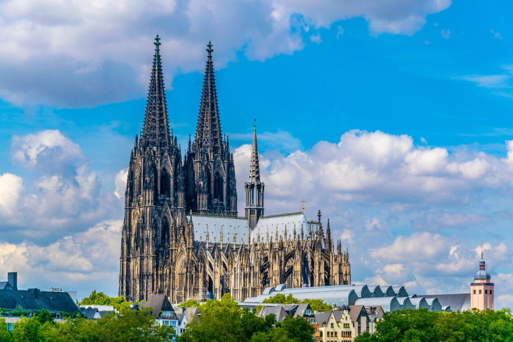
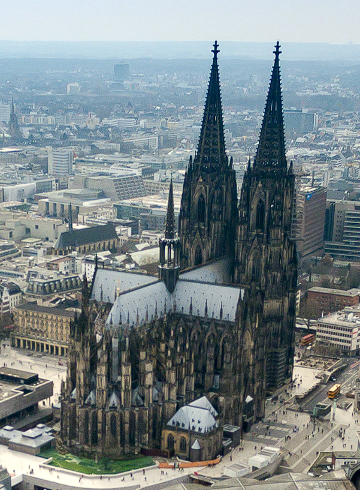

Profil Sekolah


Nama Sekolah : Sekolah Dasar Negeri 505 Qakrosim
Akreditasi : S
Alamat : Jln. Qakrosim 2 No.78
Jumlah Kelas : 6
Paralel Kelas : 4 (A-D)
Visi
Mewujudkan generasi masa depan yang beriman, berilmu, berakhlak mulia,
cakap berteknologi, serta peduli terhadap lingkungan dan budaya bangsa
dalam menghadapi tantangan global
Menjadi sekolah dasar unggulan yang melahirkan anak-anak berkarakter
kuat, berpikiran kreatif, berpandangan luas, serta mampu beradaptasi
dengan perkembangan zaman dan teknologi masa depan
Membentuk insan cerdas yang mampu berinovasi, memiliki rasa cinta
tanah air, berjiwa kepemimpinan, dan berdaya saing tinggi dalam
menghadapi era revolusi industri dan transformasi digital dunia
Mencetak peserta didik yang tidak hanya menguasai ilmu pengetahuan,
tetapi juga mengedepankan etika, kejujuran, kepedulian sosial, serta
mampu berkontribusi positif bagi kemajuan bangsa dan dunia
Menjadi pusat pendidikan dasar yang berkomitmen membangun karakter,
mengembangkan potensi intelektual, serta menanamkan semangat lifelong
learning untuk membentuk generasi emas Indonesia tahun 2045
Misi
-
Menyelenggarakan pendidikan berbasis nilai-nilai keagamaan,
kebangsaan, dan kemanusiaan untuk membentuk karakter siswa yang
beriman, jujur, bertanggung jawab, dan cinta tanah air dalam
menghadapi dinamika global
-
Mengembangkan kurikulum dan pembelajaran yang inovatif, berbasis
teknologi informasi dan sains, untuk menyiapkan siswa menjadi pribadi
kreatif, kritis, solutif, serta adaptif terhadap perubahan zaman
-
Menciptakan lingkungan belajar yang nyaman, sehat, ramah anak, serta
inklusif, guna mendorong pertumbuhan potensi akademik, bakat, minat,
dan kecerdasan emosional seluruh peserta didik
-
Mendorong siswa untuk aktif berpartisipasi dalam kegiatan sosial,
seni, budaya, dan olahraga sebagai upaya membentuk generasi yang
seimbang antara kecerdasan intelektual, emosional, sosial, dan
spiritual
-
Menjalin kemitraan yang harmonis antara sekolah, keluarga, dan
masyarakat guna membangun ekosistem pendidikan yang berkelanjutan
dalam mempersiapkan generasi masa depan yang mandiri, berdaya saing,
dan berwawasan global